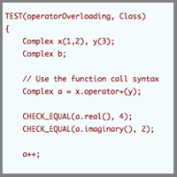
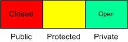

Lesson 7
 C++ Classes—Data and Member Functions—Part 2
Overloading Functions
We've seen that C++ functions can be overloaded. That is, they can use the same name, in the same scope, if their signatures (number and types of parameters) are unique. Such information is used by the compiler to identify each function uniquely. Furthermore, we've learned that overloading is not restricted to non-member functions.
Overloaded functions will be a part of our first look at polymorphism in C++. Let's begin by looking at a rather interesting set of such functions. They may be written either as member or non-member functions.
Operator Functions
A major goal of object-oriented programming is to create code that naturally represents problem space. The ability to provide operators that work in a natural and expected way with such objects makes the job easier. The C++ language supports such an ability by permitting built-in operators to be overloaded to work with class type operands.
Overloaded operators are implemented as operator functions. Such a function can either be a class member function or a non-member function. In either case, an operator function must take at least one class type argument. The declaration and definition are syntactically the same as for other functions except the function name has the following form:
operatorX(args) { body }
X is the operator symbol being overloaded args: as appropriate for implementation body: implements the function
Invocation
Key Terms
- smart pointer
- smart pointer operator
- friend
Invocation of an operator function may take one of two forms:
- Infix expression syntax
If the+operator is overloaded,A + BAandBcan be member or non-member instances. - Function call syntax
If the+operator is overloaded,A.operator+ (B)
Note thatoperator+is the function name.
Rules
Because operator functions are invoked using the same syntax as the built-in functions, operator functions
- must have the same number of arguments as language defined versions;
- must have the same precedence as the built-in operators—this cannot be overridden;
- cannot have default parameters; and
- cannot override the predefined meaning.
Limitations
Of course, with rules, we need exceptions and limitations. Thus, because of the operator function syntax, the following caveats apply.
Certain User-Defined Operators Cannot Behave Analogously to Built-In Versions
The pre- and postfix operators (++ and --) present a problem. We can easily tell ++i from i++, and so can the compiler. Because of the syntax for the overloaded operators, however, neither of us can distinguish operator++() from operator++(). Which is prefix and which is postfix? We need a way to tell them apart.
The designers of the language decided to distinguish the pre and post versions of these operators using the syntax that follows.
Prefix version:
operator++() {}
Postfix version:
operator++(int) {}
This is clearly not what we would call good style—no, actually, let's put this another way: it's a hack to get around a problem. It's definitely not a good example of information hiding. The problem is directly in the public (inter)face.
When we use the postfix version of such an operator, it is not necessary to provide some integer value as an argument. This syntax is merely a flag for the compiler to allow it to select the proper function when the operator is invoked.
When the postfix version appears in code, the compiler says, "Ah-ha, I remember this thing, get the function with the int arg." (This is a direct quote, of course.)
Some Operators Cannot Be Overloaded.
The following operators cannot be overloaded:
. ?: :: * ,
We identify them respectively as the dot operator ("."), the conditional operator ("?:"), the scope operator ("::"), the dereference operator ("*"), and the comma operator (",").
Some Operators Must Be Member-Only Operators.
The following operators must be member-only operators:
= [ ] ( ) ->
We identify these respectively as the assignment operator ("="), the index operator ("[]"), the function operator ("()"), and the member selector operator ("->").
Let's now see how we can work such operators. We'll create the class Complex, the complex number class. When working with numbers, people expect to be able to perform various kinds of arithmetic operations on them. They also expect such operations to be applied in a familiar way. They expect to add two numbers by writing
C = A + B
not
comb(C,A,B)
which combines A and B and puts the answer into C.
We want complex numbers to appear as the familiar reals. To be able to use complex numbers in the same way we do reals, we'll create a + operator that will take two complex numbers as operands so that we may add two complex numbers. We'll also define the pre- and postfix autoincrement operators that take a single complex operand. These latter two are interesting because of the associated semantics. The prefix operator must perform the increment operation, then return the operand. The postfix operator must do the opposite.
A complex number has two parts: a real part and an imaginary part. We write these as
a + jb
Sorry, mathematicians. (They write "a + ib".) The variable a is the real part and b is the imaginary part. The j (or i) is the square root of -1; it identifies the imaginary part. (They always told us we couldn't take the square root of a negative number, but we can.)
When we increment a real number in the lines
int z = 3; z++;
we expect z to have the value 4 (i.e., the autoincrement operator should add 1 to the value of z). What should we expect if z is complex? Since the number comprises a real and an imaginary part, it makes intuitive sense that the autoincrement and autodecrement operators would operate on both elements. This is the approach we've taken below.
// Classes Members - Operators Example
class Complex
{
public:
Complex(int r = 0, int i =0 )
: myReal(r), myImaginary(i)
{
}
//Overload the + operator
Complex operator+(Complex a1)
{
return Complex(myReal + a1.myReal, myImaginary + a1.myImaginary);
}
//Overload the pre- and postfix
// autoincrement operators
//Increment then return incremented value
Complex& operator++(int)
{
myReal+=1, myImaginary+=1;
return *this;
}
//Increment then return a copy of
// the original number
Complex operator++()
{
// not the best implementation
myReal+=1, myImaginary+=1;
return Complex(myReal-1, myImaginary-1);
}
int real()
{
return myReal;
}
int imaginary()
{
return myImaginary;
}
private:
int myReal;
int myImaginary;
};
TEST(operatorOverloading, Class)
{
Complex x(1,2), y(3);
Complex b;
// Use the function call syntax
Complex a = x.operator+(y);
CHECK_EQUAL(a.real(), 4);
CHECK_EQUAL(a.imaginary(), 2);
a++;
CHECK_EQUAL(a.real(), 5);
CHECK_EQUAL(a.imaginary(), 3);
b=++a;
CHECK_EQUAL(b.real(), 5);
CHECK_EQUAL(b.imaginary(), 3);
// Use the infix notation - the most common usage
b = x + y;
CHECK_EQUAL(b.real(), 4);
CHECK_EQUAL(b.imaginary(), 2);
}
Member versus Non-Member Implementation
We've mentioned several times that overloaded operator functions can be implemented either as member functions or non-member functions. The third limitation we listed constrains several of the operators to implementation as member-only functions. Other than flexibility, why should it make any difference?
Member Functions
With member implementation, one operand must be a member of the class overloading the operator. Specifically, that one must be the left operand. Because of the function call syntax, we can write
x.operator@();
Remember that each member function has a this pointer (which is of class type). If we try to apply the operator to an instance of a different class, we'll have a type mismatch. Beyond the type issue, the major advantage of member function operators is they can be invoked with one less operand, as follows:
Unary
x.operator@()
Binaryxis a class instance@is any arbitrary operator
x.operator@(y)
x operator@ y
xis class instance@is any arbitrary operator
Non-Member Functions
If the operator requires a left operand of a different type than the class overloading the operator, then we must use the non-member syntax and the operator function may need to be declared a friend if it requires access to protected or private data. We'll talk about friends shortly.
The Stream class is one of the best examples of the need for non-member operator functions. When we overload the insertion (or extraction) operator, most of the time, the left operand is not a member of the overloading class, but rather a member of the Stream class—cout, for example. We may not think of it in such a way, but cout is an instance of a Stream class object.
Unary
operator@(x)
Binary
Function call syntax
operator@(x,y)
Infix syntax
x operator@ y
// Classes Members - Operators Example
// Member and Non Member Operators
// Bring the names into namespace
class Real;
class Complex;
// Define the operators using
// non-member functions
// Complex add
Complex operator+(Real a1, Complex a2);
class Real
{
public:
Real(int real = 0) : myReal(real)
{
}
Real operator+(Real a1)
{
return Real(myReal + a1.myReal);
}
// this cast overload allows Real to be used like an int
operator int() const
{
return myReal;
}
// friend declaration allow these global operator overload function
// to access Real's private data
friend Complex operator+(Complex a1, Real a2);
friend Real operator+(Real a1, int a2);
private:
int myReal;
};
class Complex
{
public:
Complex(int real = 0, int imaginary = 0)
: myReal(real),
myImaginary(imaginary)
{
}
// Overload the pre- and postfix autoincrement operators
// Increment then return incremented value
Complex& operator++(int)
{
myReal+=1, myImaginary+=1;
return *this;
}
//Increment then return a copy of the original number
Complex operator++ ()
{
myReal+=1, myImaginary+=1;
return Complex(myReal-1, myImaginary-1);
}
int real() const
{
return myReal;
}
int imaginary() const
{
return myImaginary;
}
private:
// Declare the real and imaginary parts
int myImaginary;
int myReal;
};
TEST(MoreComplex, OperatorOverloading)
{
// Declare some real numbers
Real a(10), b(17), c;
// Declare some complex numbers
Complex d(11, 25), e;
// Add two reals
c = b + 12;
CHECK_EQUAL(29, c);
//Add a real and a complex...instance a
// is not a member of the Complex class,
//therefore we must have a non-member function
e = a + d;
CHECK_EQUAL(21, e.real());
CHECK_EQUAL(25, e.imaginary());
e = d + a;
CHECK_EQUAL(21, e.real());
CHECK_EQUAL(25, e.imaginary());
}
// Define the operator functions
Complex operator+(Real a1, Complex a2)
{
return Complex (a1 + a2.real(), a2.imaginary());
}
Complex operator+(Complex a1, Real a2)
{
return Complex(a1.real() + a2.myReal, a1.imaginary());
}
Real operator+(Real a1, int a2)
{
return Real(a1.myReal + a2);
}
Operators in Action
Let's now look at several different overloaded operators. We'll begin with what is often called the smart pointer. We use the smart pointer to add more control and richer semantics to the traditional built-in pointer.
The Smart Pointer: operator->()
A smart pointer is the overloaded operator function operator->(). Normally the -> is a binary operator in which the left operand is a pointer and a class or structure member name is the right operand. When the left operand is an object rather than a pointer to an object, the notation invokes the unary member function operator->(). The expression object -> member is interpreted as (object.operator->()) -> member. The function operator->() must return a valid object pointer, object, or reference to an object that has an overloaded -> operator so we can determine what is being pointed to.
The expression object ->member is often called the smart pointer operator. Like several other overloaded operators, smart pointers must be member functions. They are not really pointers; they simply have pointer-like semantics that allow us to provide a functionality that is more intelligent, richer, and more robust than built-in dumb pointers.
You'll study smart pointers in much greater detail in the intermediate and advanced C++ courses. For now, let's see how they work. The syntax is simple:
ClassName* operator->()
In addition to containing the real pointer, the smart pointer will also overload operator-> to handle dereferencing.
// Classes Members - Operators Example
// Smart Pointers
class Simple
{
public:
Simple(int aValue)
: myValue(aValue)
{
}
int getValue() const
{
return myValue;
}
private:
int myValue;
};
// Declare a second class with a smart pointer
class SimplePtr
{
public:
SimplePtr(Simple* aPtr = 0)
:sPtr(aPtr)
{
}
//The pointer function performs an operation
//then returns a pointer to aSimpler
Simple* operator->();
private:
Simple* sPtr;
};
Simple* SimplePtr::operator->()
{
// If the pointer is null - then we return a null.
// We could check for null and do something different.
// But, in this case we want the same behavior as a raw pointer.
// That is, if the caller attempts to use the null pointer
// an access violation occurs.
return sPtr;
}
TEST(pointer, operatorOverload)
{
SimplePtr aPtr;
#if 0
// This is an access violation - dereferencing null pointer
aPtr->getValue();
#endif
Simple b(30);
// Why does this work?
//
// We make use of the compiler generated assignment operator for SimplePtr.
// So we can assign the value of one instance of SimplePtr to another.
//
// But, we are not done yet because &b is not an instance of SimplePtr.
// Here the compiler helps us some more. It knows we have a (compiler generated)
// assignment operator for SimplePtr. The compiler then looks to see if it has
// a way to convert &b to a SimplePtr. The compiler finds SimplePtr has
// a constructor that takes a single arg, that happens of type Simple*. &b
// type is Simple*. So the compiler implicitly constructs a SimplePtr from
// using &b as the constructor argument.
//
// If we don't want the compiler to implicitly construct instances for
// us, we can use the keyword explicit on the constructor. This prevents
// the compiler from implicit constructions. Note explicit is only
// meaningful for constructors with a single argument.
//
// In the SimplePtr class declaration try changing this line:
// SimplePtr(Simple* aPtr = 0)
//
// to
//
// explicit SimplePtr(Simple* aPtr = 0)
//
// then try to compile
//
aPtr = &b;
CHECK_EQUAL(30, aPtr->getValue());
}
The Assignment Operator: operator=()
In addition to the constructor(s) and destructor, the assignment operator and the copy constructor (which we'll study next) are two members that should be in every class. The assignment operator is invoked when one initialized object is to be assigned to a second initialized object. When invoked, the operator must first check for assignment to self. If so, it must return itself. When implemented, the assignment operator must also serve as a destructor for the object being assigned to. That is, the object being assigned to already points to an initialized space, and before that pointer is overwritten, the space must be returned to the heap. If we fail to do so, we will lose the ability to address the old space and thereby potentially create some significant problems. Such problems, the least of which is a memory leak, may remain hidden for quite a while. The syntax is as follows:
ClassName& operator=()
The operator can have a return value; the most common is *this. Such a return allows for assignments of the form
A = B = C...
The assignment operator is not called for the declarations such as
ClassName object1 = object2;
In this case, object 1 does not exist—it is being created.
Let's look at an example. A familiar request in C and C++ is "can I assign one array to another?" The familiar answer is "no." Let's fix that.
// Classes Members - Operators Example
// Assignment Operator
// Define the class Array with an overloaded
// assignment operator
class Array
{
public:
Array(int nElements);
Array(const Array& array);
Array::~Array()
{
delete[] myArray;
// You might be tempted to write:
// mySize = 0
// here.
// There is no need. Once the class is destroyed, there
// is no way to access the member data, thus no need to
// initialize any member data to 0.
}
#if 0
Array& operator=(const Array& a);
#else
Array& operator=(Array a);
#endif
// Since we're modeling an array - overload the indexing operators
// to support conventional element access
// This one is for const arrays
const int& operator[](std::size_t position) const
{
// we could check the array bound here and protect against accessing past the array end
return myArray[position];
}
// this one is for non-const arrays
int& operator[](std::size_t position)
{
// we could check the array bound here and protect against it
return myArray[position];
}
int getSize() const
{
return mySize;
}
void swap(Array& x)
{
std::swap(mySize, x.mySize);
std::swap(myArray, x.myArray);
}
private:
int mySize;
int* myArray;
};
Array::Array(int nElements)
: myArray(new int[nElements])
{
for (int i = 0; i < nElements; i++)
{
myArray[i] = 0;
}
mySize = nElements;
return;
}
Array::Array(const Array& src)
: myArray(new int[src.mySize])
{
for (int i = 0; i < src.mySize; i++)
{
myArray[i] = src.myArray[i];
}
mySize = src.mySize;
return;
}
#if 0
// Conventional assignment operator implementation
// Why is the argument to the function specified as const?
Array& Array::operator=(const Array& a)
{
//Check for assignment to self
if (&a != this)
{
mySize = a.mySize;
// note the delete [] operator
delete[] myArray;
myArray = new int[mySize];
for (int i = 0; i < mySize; i++)
{
myArray[i] = a.myArray[i];
}
}
return *this;
}
#else
// Uses the copy and swap idiom - better assignment operator implementation
// http://stackoverflow.com/questions/3279543/what-is-the-copy-and-swap-idiom
Array& Array::operator=(Array a)
{
swap(a);
return *this;
}
#endif
TEST(Assignment, Class)
{
Array a1(4);
Array b1(5);
// Enter some values
for (int i = 0; i < 4; i++)
{
a1[i] = i;
b1[i] = i + 1;
}
CHECK_EQUAL(4, a1.getSize());
CHECK_EQUAL(0, a1[0]);
CHECK_EQUAL(1, a1[1]);
CHECK_EQUAL(2, a1[2]);
CHECK_EQUAL(3, a1[3]);
b1[4] = 5;
CHECK_EQUAL(5, b1.getSize());
CHECK_EQUAL(1, b1[0]);
CHECK_EQUAL(2, b1[1]);
CHECK_EQUAL(3, b1[2]);
CHECK_EQUAL(4, b1[3]);
CHECK_EQUAL(5, b1[4]);
a1 = b1;
CHECK_EQUAL(5, a1.getSize());
CHECK_EQUAL(1, a1[0]);
CHECK_EQUAL(2, a1[1]);
CHECK_EQUAL(3, a1[2]);
CHECK_EQUAL(4, a1[3]);
CHECK_EQUAL(5, a1[4]);
}
The Copy Constructor
There are many occasions when a copy of an object is needed. For example, when an object is passed by value, as in
x.func(y)
a copy of y is made and passed. When an object is returned by value, as in the following,
int func(int y)
{
do stuff to y
return y;
}
a copy of y is made and returned.
When one object is initialized by another object, as in
x1 = x2
a copy of x2 is made. If an object is assigned to another object, as in
x1 = x2
x2 is copied to x1, and x1 is destroyed.
Copying and initialization are handled in C++ using two functions, the copy constructor and the operator function operator=(). We've just talked about the latter; now we'll discuss the former. The syntax for the copy constructor is as follows:
class X(const class X&);
Why is the argument const?
The copy constructor is a special kind of constructor. It takes as an argument a reference to an object of the same class. It then performs initialization on the newly created object as constructors are supposed to do. The copy constructor is used by the compiler to copy objects by value, into a function or out of a function, when an object is returned by value.
If a copy constructor is not defined, the compiler will create one for you. The compiler performs a shallow bitwise copy. In many cases the compiler generated copy constructor is fine. But, if an object to be copied owns any dynamic memory, the compiler simply creates a pointer to the memory chunk and places it in the copy. When the copy goes out of scope, the object (and the pointer . . . and the memory) is deleted. When the original now tries to reference non-existent memory . . . oops.
If you need to define your own copy constructor, then you likely will need to define your own assignment operator. These two operators most always go together.
Let's check out a copy constructor.
// Classes Membership - Operators Example
// Copy Constructor
class A
{
public:
A(int aValue)
: value(aValue)
{
}
// Define the copy constructor
// In this case the compiler generated copy constructor works as well as
// our hand coded copy constructor
A(const A& a)
{
value = a.value;
}
int getValue() const
{
return value;
}
private:
int value;
};
// The A instance is passed by value into funct. Then it is again returned by value
A funct(A a)
{
return a;
}
TEST(CopyConstructor, Class)
{
A a(3);
// Pass it by value to the function
A aReturnedByValue = funct(a);
CHECK_EQUAL(3, aReturnedByValue.getValue());
}
Friends
As we've seen before a class definition provides three levels of access to data and function members: public, protected, and private. Using such access specifiers, we permit general, inhertiance, or no access to class members. By specifying such segregation, we can control access to function and data members. Should such restrictions be rigid? Are there times when we should permit more liberal access? These are good questions.
Figure 7.1—Three Levels of Access

We saw that overloaded operators, with non-member left operands, must be declared as non-member functions. Such functions will have a problem if they must access private data members of the operand.
C++ provides a means for more liberal access to non-public members. Under a specified set of conditions, a non-member may be identified as a friend of the class. A class friend is designated by the keyword friend followed by the class name, as follows:
friend YourClass;
Note, the name of the friend is not in the scope of the class.
The designation can occur anywhere in class definition; it is not affected by access specifier. Both convention and the goal of making the design intent clear and obvious suggest placing all friend designations in the front of the class. Once an object is designated as a friend, it has access to all non-public members as if they were public. Access is unidirectional, however. If B is designated as friend of A, B can access A's non-public members, but A cannot access B's.
// Classes Members - Friends Example
// Classes as friends
class Number
{
// The class Adder is declared a friend
friend class Adder;
public:
Number() {number = 10;}
int getNumber() {return number;}
private:
int number;
};
class Adder
{
public:
// class Adder can access
// the private data of instances of number
//
// add is declared static is it does not access
// member data.
static int add(const Number& aNumber)
{
return aNumber.number + 10;
}
};
TEST(friends, Class)
{
Number n1;
CHECK_EQUAL(10, n1.getNumber());
CHECK_EQUAL(20, Adder::add(n1));
}
Who Can Be Your Friend?
A friend can be one of the following:
- Class—for example,
friend class X - A particular function—such as
friend int sub (int y);
The functionsubwill not be a function member of the class. If it has athispointer, it is for the containing class. Such a designation is useful when defining operator functions. - A particular class member—for example,
friend int Mult::get();
// Functions as friends
class AnotherNumber
{
// The function add is declared to be a friend of
// the class AnotherNumber.
friend int add(const AnotherNumber& aNumber);
public:
AnotherNumber() : number(20)
{
}
int getNumber() const
{
return number;
}
private:
int number;
};
int add(const AnotherNumber& aNumber)
{
// add has access to the private data of aNumber
return aNumber.number + 10;
}
TEST(MoreFriends, Class)
{
AnotherNumber n1;
CHECK_EQUAL(20, n1.getNumber());
CHECK_EQUAL(30, add(n1));
}
Caveats and Problems
- Friends can have access to everything. This defeats data hiding, so use them carefully.
- Friend declarations introduce extra coupling between classes.
- Friends permit changing of internal state from the outside. We should always use member functions, not friends, to change state.
The major use of friends is to provide more efficient access to data members than the function call and to accommodate operator functions with arbitrary left operands. Friend should be rarely (if ever) used.
Summary
In this lesson, we concluded our second look inside the C++ class. We began with overloaded member functions and from these developed operator functions. We then studied two important member functions—the copy constructor and the assignment operator—and learned why they're necessary. We concluded with a look at the friend designator, a means to get around non-public access specifiers.
Practice Questions
Test your understanding of the concepts in Lesson 6 by working through the following practice questions, then check your answers with Answers to Practice Questions for Lesson 7.
- Can we overload class function members?
- How do I overload a C++ operator?
- What's the difference between an operator overloaded as a class member function versus a non-member function?
- So, if you're so smart, what's a smart pointer?
- Do I really need a copy constructor?
- If I declare class A as a friend of my class, then I can just go and access its stuff any time I want to, right?
- By putting the friend declaration in the private section, that friend can only use my access functions to get to my private data members, right?